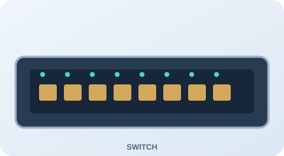

Şəbəkəni yalnız oxumaq yox, özün qurmaq
Bu modulun sonunda tələbə şəbəkə qurğularını tanıyacaq, fiziki və məntiqi bağlantıları fərqləndirəcək, IP ünvanlarını və portları təyin edəcək, OSI/TCP/IP modelləri üzrə paketlərin hərəkətini izah edəcək və tipik nasazlıqları diaqnostika edəcək.
Qurğu, port, kabel və interfeysləri müəyyən et.
Funksiyanı, OSI qatını və protokolu əlaqələndir.
Uyğun kabel və portlarla virtual topologiya qur.
IP konfiqurasiya et, paket göndər, nasazlığı tap.
Aktiv və passiv şəbəkə cihazları
Aktiv qurğular elektrik enerjisi hesabına siqnalı və ya şəbəkə trafikini emal edir. Passiv komponentlər siqnalı emal etmədən ötürür, sonlandırır və ya fiziki bağlantını təşkil edir.
Aktiv qurğular
Passiv komponentlər
Switch-in arxa panelində portları tanı

Port növlərini seçərək funksiyasını oxuyun.
Port düymələrindən birini seçin.
Virtual Network Builder — şəbəkəni addım-addım qur
Bu simulyatorda əvvəlcə soldakı qurğu kataloqundan cihaz əlavə edin. Sonra “Kabel qoş” rejimini aktiv edin, birinci cihazın portuna və ardınca ikinci cihazın portuna klik edin. Bağlantı xətti avtomatik çəkiləcək və proses izah olunacaq.
Soldan Router, Switch, PC və Server əlavə etməklə başlayın.
İki port arasında kabel qurulduqda burada hansı prosesin baş verdiyi göstəriləcək.
Tapşırıq: universitetin kiçik lokal şəbəkəsini qur
- Bir Router, bir Switch, iki PC və bir Server əlavə edin.
- Router-in LAN portunu Switch-in Ethernet portuna qoşun.
- Hər iki PC-ni və Server-i Switch-in ayrı portlarına qoşun.
- “Şəbəkəni yoxla” düyməsi ilə topologiyanı yoxlayın.
- “Paket göndər” ilə PC-dən Server-ə məlumat ötürülməsinin sadələşdirilmiş vizualizasiyasını başladın.
OSI və TCP/IP modeli
OSI modeli şəbəkə rabitəsini yeddi funksional səviyyəyə ayırır. TCP/IP modeli isə internetdə istifadə edilən protokol arxitekturasını daha az sayda qatda təsvir edir.
OSI ↔ TCP/IP uyğunluğu
| OSI səviyyələri | TCP/IP qatı | Nümunələr |
|---|---|---|
| 7 Application, 6 Presentation, 5 Session | Application | HTTP, DNS, TLS, tətbiq sessiyaları |
| 4 Transport | Transport | TCP, UDP |
| 3 Network | Internet | IPv4, IPv6, ICMP |
| 2 Data Link, 1 Physical | Network Access | Ethernet, Wi-Fi, fiziki mühit |
Paketin kapsullaşdırılması
PC-1-dən Server-ə HTTP sorğusu göndərildikdə məlumat hər qatda müvafiq başlıqla tamamlanır.
Port nömrələri və şəbəkə protokolları
Port nömrəsi eyni IP ünvanında işləyən müxtəlif tətbiq xidmətlərini fərqləndirməyə kömək edir. Portun açıq görünməsi xidmətin mütləq təhlükəsiz və əlçatan olması demək deyil.
| Protokol | Port | Təyinat | Transport |
|---|---|---|---|
| FTP | 20/21 | Fayl ötürülməsi | TCP |
| SSH | 22 | Təhlükəsiz uzaqdan idarəetmə | TCP |
| Telnet | 23 | Şifrələnməmiş uzaqdan giriş | TCP |
| SMTP | 25 | E-poçt göndərilməsi | TCP |
| DNS | 53 | Domen adlarının həlli | UDP/TCP |
| DHCP | 67/68 | Avtomatik IP konfiqurasiyası | UDP |
| HTTP | 80 | Veb xidməti | TCP |
| POP3 | 110 | E-poçtun qəbulu | TCP |
| NTP | 123 | Vaxt sinxronizasiyası | UDP |
| HTTPS | 443 | Təhlükəsiz veb xidməti | TCP; HTTP/3 üçün QUIC/UDP 443 |
Mini laboratoriya — müştəri/server bağlantısı
TCP və UDP müqayisəsi
Əlaqə yönümlüdür. Ardıcıllıq, qəbulun təsdiqi və yenidən ötürmə mexanizmləri ilə etibarlı bayt axını təmin edir.
SYN → SYN-ACK → ACKƏlaqəsiz datagram ötürür. Çatdırılma və ardıcıllıq zəmanətini öz-özlüyündə vermir; gecikmənin az olmasının vacib olduğu tətbiqlərdə istifadə oluna bilər.
DatagramIPv4 və IPv6 protokolları
IPv4 ünvanı 32 bit, IPv6 ünvanı 128 bit uzunluğundadır. IPv4-də subnet mask/prefiks şəbəkə və host hissəsini ayırır. IPv6-da broadcast anlayışı yoxdur; multicast və anycast istifadə olunur.
32 bit · 4 oktet · onluq yazılış
128 bit · 8 hextet · onaltılıq yazılış
IPv4 subnet kalkulyatoru
IPv4 və IPv6 müqayisəsi
| Meyar | IPv4 | IPv6 |
|---|---|---|
| Ünvan uzunluğu | 32 bit | 128 bit |
| Yazılış | Onluq, nöqtə ilə ayrılmış | Onaltılıq, iki nöqtə ilə ayrılmış |
| Broadcast | Var | Yoxdur |
| ARP | IPv4-də MAC həlli üçün | Neighbor Discovery (ICMPv6) |
| Avtokonfiqurasiya | DHCP və digər üsullar | SLAAC və DHCPv6 |
Şəbəkə problemlərinin aradan qaldırılması
Nasazlığı sistemli araşdırın: fiziki bağlantı → IP konfiqurasiyası → lokal şəbəkə → gateway → DNS → tətbiq xidməti.
Kabel, link LED, enerji, port statusu.
IP, maska/prefiks, gateway, DHCP.
Ping, marşrut, VLAN, ACL.
DNS, port, xidmətin işləməsi.
Nasazlığı tap — interaktiv ssenari
Ən uyğun ilk yoxlama hansıdır?
Əsas diaqnostika əmrləri
| Əmr | İstifadə |
|---|---|
ping | IP əlçatanlığını və gecikməni yoxlamaq |
ipconfig /all / ip addr | IP konfiqurasiyasına baxmaq |
tracert / traceroute | Marşrut üzrə keçidləri izləmək |
nslookup | DNS sorğusunu yoxlamaq |
arp -a | IPv4 ARP keşini görmək |
netstat | Şəbəkə bağlantılarını və portları görmək |
Virtuallaşdırma texnologiyaları
Virtuallaşdırma fiziki resurslar üzərində məntiqi/virtual hesablama və şəbəkə mühitləri yaratmağa imkan verir. Hypervisor virtual maşınları idarə edir; virtual switch VM-lər arasında və fiziki şəbəkəyə trafik ötürür.
VM hostun şəbəkə bağlantısından ünvan çevirməsi ilə istifadə edir; xaricdən VM-ə giriş üçün əlavə qayda tələb oluna bilər.
VM lokal şəbəkədə ayrıca qurğu kimi görünür və şəbəkədən IP ala bilər.
VM-lər və host arasında təcrid olunmuş əlaqə yaradır; adətən xarici şəbəkəyə çıxış yoxdur.
VLAN məntiqi seqmentləşdirmə, SDN isə idarəetmə müstəvisinin proqramla mərkəzləşdirilməsidir.
Virtual şəbəkə rejimini seç
Şəbəkə cihazlarının, OSI və TCP/IP modellərinin interaktiv simulyasiyası
İşin məqsədi
Router, Switch, Server və kompüterləri virtual şəbəkədə birləşdirmək; OSI/TCP/IP səviyyələrində məlumat ötürülməsini izləmək; IP ünvanları və portları təyin etmək; TCP, UDP, DNS, HTTP və ARP protokollarının rolunu öyrənmək.
Nəzəri hissə
Şəbəkə rabitəsi fiziki mühit, kadr ötürülməsi, məntiqi ünvanlama, nəqliyyat və tətbiq xidmətlərinin birgə fəaliyyəti ilə təmin edilir. Göndəricidə kapsullaşdırma, qəbul edən tərəfdə dekapsullaşdırma baş verir. Routerlər şəbəkələr arasında yönləndirmə aparır, switch-lər isə əsasən MAC ünvanlarına əsasən lokal kadrları ötürür.
Praktiki hissə — paket axınının təhlili
Wireshark üçün analiz tapşırığı
Wireshark-da laboratoriya trafikini tutduqda aşağıdakı display filter-ləri tətbiq edin:
| Filtr | Müşahidə |
|---|---|
arp | ARP sorğu/cavab paketləri |
icmp | Ping və ICMP mesajları |
dns | DNS sorğuları və cavabları |
tcp | TCP seqmentləri |
udp | UDP datagramları |
http | HTTP trafiki (şifrələnməmiş olduqda) |
ip.addr == 192.168.10.10 | Göstərilən IPv4 ünvanı ilə əlaqəli trafik |
İşin yerinə yetirilməsi ardıcıllığı
- Virtual Network Builder-də topologiyanı yaradın.
- Router, Switch, Server və kompüterlərin bağlantılarını yoxlayın.
- IPv4 ünvanlarını və default gateway-i təyin edin.
- OSI qatlarında HTTP sorğusunun kapsullaşdırılmasını izləyin.
- DNS, TCP/UDP və ARP funksiyalarını müqayisə edin.
- Wireshark-da uyğun filtrlərlə paketləri təhlil edin.
- Bir nasazlıq yaradın, səbəbini müəyyənləşdirin və aradan qaldırın.
Hesabat
Hesabata topologiyanın şəkli, qurğu və port siyahısı, IP ünvanlama cədvəli, paket axınının mərhələləri, Wireshark filtrlərinin nəticələri, aşkarlanmış nasazlıq və həll üsulu daxil edilməlidir.
10 real həyat ssenarisi — interaktiv qiymətləndirmə
Tapşırıqlar əvvəlki modulun yanaşmasına uyğun olaraq fərqli formatlardadır: tək seçim, çoxseçimli, doğru/yanlış, uyğunlaşdırma, ardıcıllıq, boşluğun doldurulması və situasiya qərarı. Hər cavabdan sonra izah göstərilir.
Universitet fakültəsinin korporativ şəbəkəsini layihələndir
Fakültə üçün aşağıdakı tərkibdə şəbəkə qurun: 1 Router, 2 Switch, 1 Server, 6 kompüter, 1 Access Point, 2 noutbuk və 1 printer. Ethernet və Wi-Fi bağlantılarını, DHCP və DNS xidmətlərini, VLAN-larla məntiqi bölgünü və firewall qaydalarını nəzərə alın.
Layihənin mərhələləri
- Şəbəkə topologiyasını layihələndirin.
- Qurğuları birləşdirin və IP ünvanlarını təyin edin.
- Router, Switch və Server konfiqurasiyasını aparın.
- Müxtəlif protokollar üzrə paketləri izləyin.
- Nasazlıq yaradın, diaqnostika edin və aradan qaldırın.
Qiymətləndirmə rubrikası
| Bacarıq | Bal |
|---|---|
| Qurğuları tanımaq və funksiyalarını izah etmək | 20 |
| OSI/TCP/IP modellərini tətbiq etmək | 15 |
| IP ünvanlama və port konfiqurasiyası | 15 |
| Virtual şəbəkə qurmaq | 25 |
| Wireshark ilə protokol analizi | 15 |
| Nasazlıqları aradan qaldırmaq | 10 |
| Cəmi | 100 |
Modul 2 üzrə ədəbiyyat
Modulun mövzularına uyğun Azərbaycan və ingilis dillərində ədəbiyyat və elektron resurslar təqdim olunur. Rus dilində olan mənbələr siyahıdan çıxarılmışdır.
- (Əsas dərslik) A. Mustafayeva. Şəbəkə təhlükəsizliyi. Bakı, 2024, 321 s. — Kompüter şəbəkələri, şəbəkə infrastrukturu, şəbəkə texnologiyaları və təhlükəsizlik üzrə əsas dərslik.
- İsmayıl Calallı (Sadıqov). İnformatika terminlərinin izahlı lüğəti. Bakı: “Bakı” nəşriyyatı, 2017, 996 s. — Şəbəkə, protokol, interfeys və informasiya texnologiyaları terminləri.
- Musayev V.H., Qənbərov M.M., Qənbərova G.T., Əliyeva Ş.X. İnformasiya təhlükəsizliyi və kompyuter şəbəkələri. Bakı, 2015. — Kompüter şəbəkələri və onların təhlükəsizliyi.
- Mark Ciampa. CompTIA® Security+ Guide to Network Security Fundamentals. Seventh Edition. Cengage Learning, 2022. — Şəbəkə infrastrukturu, protokollar və təhlükəsizlik əsasları.
- Network and Communication. GeeksforGeeks. https://www.geeksforgeeks.org/network-and-communication/. — Şəbəkə və kommunikasiya mövzuları üzrə əlavə elektron resurs.
Laboratoriya proqramlarının rəsmi resursları
Cisco Packet Tracer — virtual şəbəkə topologiyalarının qurulması və sınağı.
Wireshark — şəbəkə paketlərinin tutulması və protokolların təhlili.